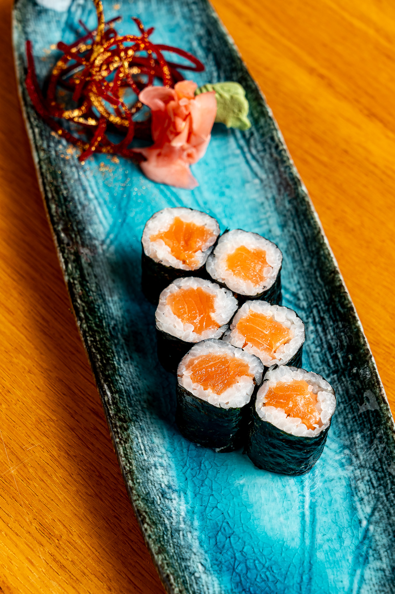
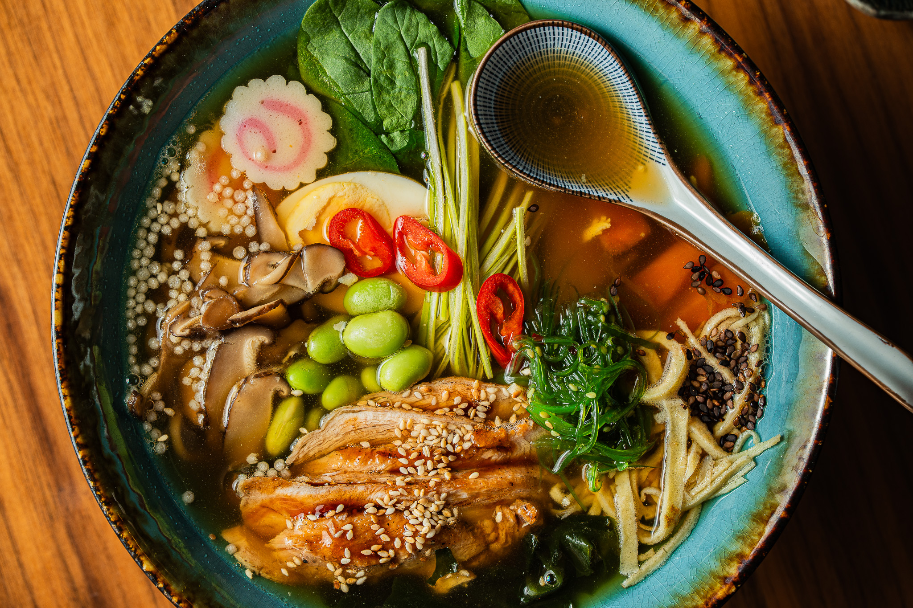
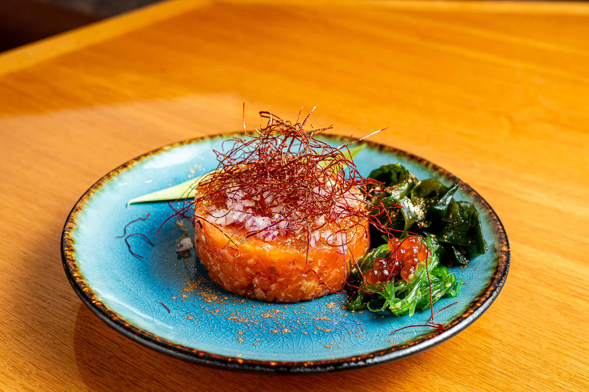
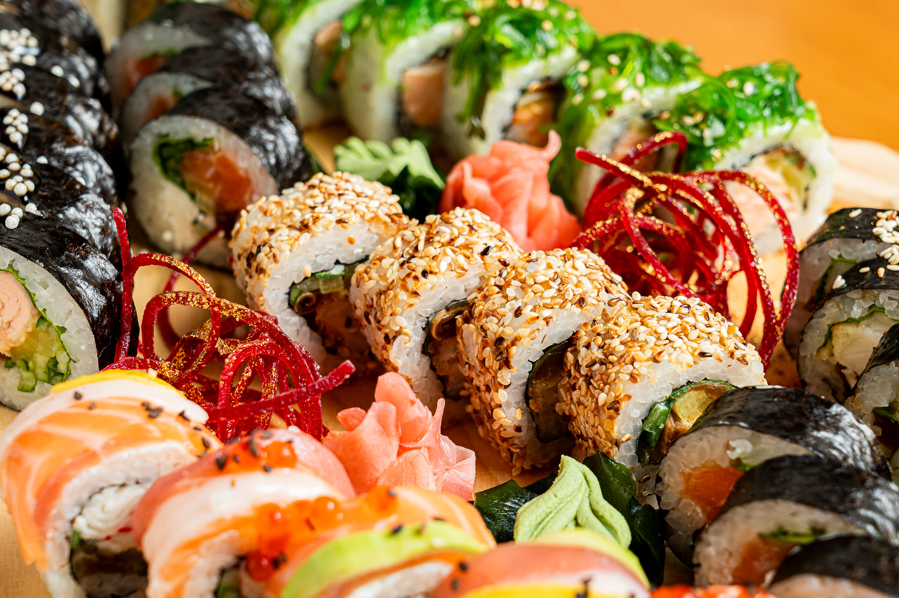

Ekspozycja Smaku
Exposition of Taste

Klejnot Oceanu (Nigiri)
Ocean's Gem (Nigiri)
Delikatność dzikiego łososia spoczywająca na ciepłym ryżu, podana na masywnej dębowej desce, muśnięta 24-karatowym złotem.
The tenderness of wild salmon resting on warm rice, served on a massive oak board, brushed with 24-karat gold.

Kryształowa Czystość (Sashimi)
Crystal Purity (Sashimi)
Nieskazitelne cięcia najszlachetniejszych ryb, lśniące na chłodnym, głębokim czarnym kamieniu.
Flawless cuts of the noblest fish, gleaming on cool, deep black stone.

Złota Korona (Ebiten)
Golden Crown (Ebiten)
Chrupiąca krewetka w złocistej tempurze, kontrastująca z jedwabistym ryżem, podana na ręcznie robionej ceramice.
Crispy shrimp in golden tempura, contrasting with silky rice, served on handmade ceramics.

Królewska Harmonia (Futomaki)
Royal Harmony (Futomaki)
Bogactwo tekstur zamknięte w perfekcyjnym zwoju, gdzie aksamitne awokado spotyka się z wyrazistym smakiem oceanu.
A wealth of textures enclosed in a perfect scroll, where velvety avocado meets the distinct taste of the ocean.

Minimalizm Absolutny (Hosomaki)
Absolute Minimalism (Hosomaki)
Precyzja i prostota. Czysty smak wyselekcjonowanego łososia otulony chrupiącymi algami nori.
Precision and simplicity. The pure taste of selected salmon enveloped in crispy nori seaweed.

Dynastia Smaku (Oyakomaki)
Dynasty of Taste (Oyakomaki)
Wykwintna kompozycja bez alg, gdzie płatki łososia tworzą koronę dla delikatnego tataru, zwieńczona kawiorem.
An exquisite composition without seaweed, where salmon petals form a crown for delicate tartare, topped with caviar.

Głębia Tradycji (Ramen)
Depth of Tradition (Ramen)
Esencjonalny, wielogodzinny bulion, podawany w masywnej, ciemnej misie, rozgrzewający duszę i ciało.
Essential, multi-hour broth, served in a massive, dark bowl, warming the soul and body.

Pocałunek Ognia (Sake Tataki)
Kiss of Fire (Sake Tataki)
Łosoś delikatnie opalany żywym płomieniem, uwalniający dymne aromaty, serwowany na polerowanym drewnie.
Salmon delicately seared with an open flame, releasing smoky aromas, served on polished wood.

Złoty Pył (Tempura)
Golden Dust (Tempura)
Krewetki otulone najdelikatniejszym, koronkowym ciastem, chrupiące niczym poranny szron.
Shrimp enveloped in the most delicate, lace-like batter, crispy like morning frost.

Szmaragdowy Las (Wakame)
Emerald Forest (Wakame)
Chrupiące algi morskie o głębokim, szmaragdowym odcieniu, skropione drogocennym olejem sezamowym.
Crispy seaweed of a deep emerald shade, drizzled with precious sesame oil.

Książęca Uczta (Omakase)
Princely Feast (Omakase)
Monumentalna kompozycja smaków, podana na wielopoziomowej paterze z ciemnego drewna i czarnego kamienia.
A monumental composition of flavors, served on a multi-level platter of dark wood and black stone.